では準静的操作と最大仕事というキーワードについて、アニメーションなどを見ながら説明した。
熱力学が考える理想的状況をピストンの場合で説明すると、
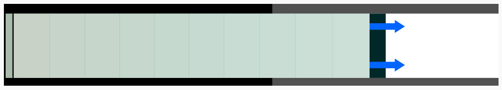
のように、ピストンを引いた直後の「左が高温・高圧で右が低温・低圧」という状況は「平衡状態」ではない。
しばらく待つと、
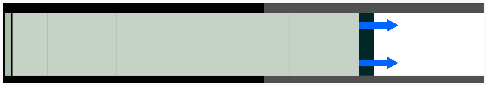
のように全体の温度・圧力（密度も）が一様になり、「平衡状態」に達する。
というわけで、ざっくり言えば「十分ゆっくり（つまり準静的に）変化するのであれば、途中の状態もすべて平衡状態を保ったまま変化していくと考えてよい」ということになる。
平衡状態は温度・圧力などが一様なので、「温度は$T$です」「圧力は$P$です」と語ることで状態を指定できるが、平衡でない状態では「左の方の温度は$T_1$で、右に行くほどだんだん低くなって最後は$T_2$に」というふうに、場所の関数である温度変数$T(x)$を使わないと状態が指定できない。つまり、平衡状態の方が使う変数が少なくて済む。
こう言うと、楽だからとズルをしているように思えるかもしれない。しかし大事なことは、「考える状態を平衡状態に限る」という（「ズル」に見えかねない）簡単化をしてもなお、熱力学という学問はとても役に立つということだ。たとえば力学における「摩擦がないとする」というのも「ズル」っぽいと言えば「ズル」なのだが、摩擦がないという簡単化をしてなお、力学は豊富な内容と実用性を持っている。
気体の状態を指定する変数としては温度$T$、圧力$P$、体積$V$、物質量Nなどが思い浮かぶ。このうち体積$V$と物質量（モル数）Nは相加的（additive）であるという性質を持っている（たとえば体積$V'$の系と体積$V''$の系を合わせると$V'+V''$の系になる）。
状態を指定する変数の中で、
を「示量変数」（extensive varijable）と呼ぶ（漢字の方が意味がわかりやすい）。
気体の場合、体積$V$と物質量（モル数）$N$が示量変数である。
この後「示量変数を変化させる」という操作を行うのだけど、たとえば体積変化を起こすとその手応えは圧力として出現する。
系全体を大きくしても変化しない変数は「示強変数」（intensive variable）である。圧力$P$や温度$T$はこちらに属する（100度の水と100度の水を合わせたら200度になったらびっくりする）。
熱力学は、「実際には$6\times10^{23}$程度の自由度がある系」をまじめに考えるという方向の学問ではなく、むしろ、「外部からする操作の種類」程度の数の変数だけで系を代表させて考えていく。
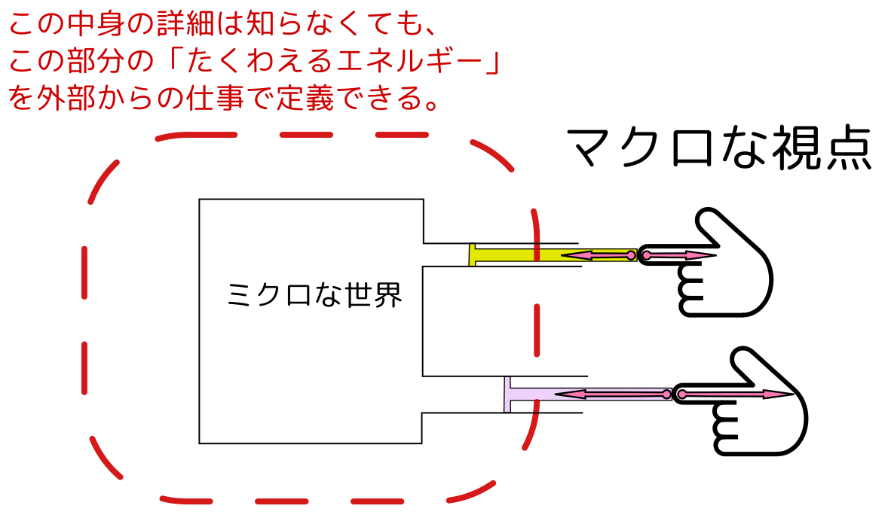
上の図の場合、操作できるのが二つのピストンがあり、それぞれを押したり引いたりするとどの程度仕事がされるか、ということは「手」の動きと「手応え」で計算できる。それに応じて系のエネルギーに対応するものが増えたり減ったりする（前に説明したようにこの時の仕事は変化のさせ方によって違うからエネルギーをちゃんと定義するには「準静的に」とか「最大仕事になるように」とか変化方法を指定する必要がある）。
実際に実験を行う時の状況として「実験装置（系）を周囲の温度と同じにする」という状況がある。この時（例によって準静的に変化が起こるとすれば）、系の温度は一定である（実際には変化の最初と最後以外では温度が変わっている可能性はある）。
このような系の状態を記述するには、まず「外部から操作できる示量変数」である$X$（$V,N$をまとめてこう書く）と、「外部環境が決める示強変数」である$T$が必要である。つまり、$(T;X)$（;で分けたのは（示強;示量）ということ）変数で系の平衡状態が定義できる（くどいようだがもう一度、こんなふうに少数の変数で系の状態が指定できてしまうのは、平衡状態だからである）。
こういう系が等温に保たれる状態で系に仕事をさせると、その分系の『エネルギー』括弧つきで書いたのは、普通のエネルギーとはちょっと違うからである。が変化する。
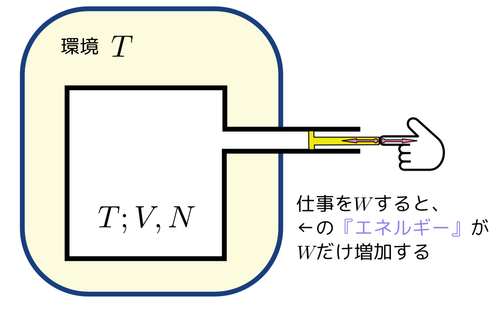
次に、周りとの接触を断って、「熱」（がまだ何なのかは説明していないが）が出入りしないという「断熱された系」を考える。今度は周りとの影響を遮断されているわけだから（たとえば魔法瓶では壁の中に真空を使うことでそれに似た状況を作っている）。
この時の仕事によって変化する量として、さっきのヘルムホルツの自由エネルギーとは別の『エネルギー』を定義することができる。
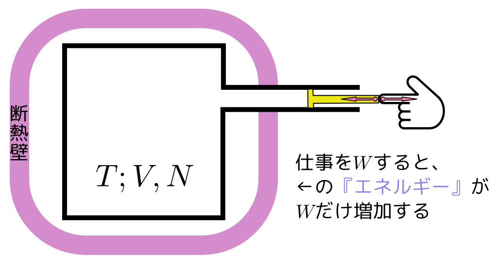
こっちは内部エネルギー$U$と呼ばれる。環境と相互作用がないから、内部エネルギーは系が持っていると考えて良い（力学でのエネルギーに近いのはこっちだろう）。
この場合外界との影響は断っているので、内部の温度$T$は環境の温度とは関係ない量である（そして、実際のところ体積を変化させると連動して変化する）。
ここでは、「熱」というよくわからない、目に見えないものは後で定義することにして、上で述べたような「操作とそれに対する手応え」で計算できるところの（つまり「目に見えるものから計算できる量」であるところの）「ヘルムホルツの自由エネルギー」や「内部エネルギー」を先に定義していく。
こうして等温操作と断熱操作を比較してみると、等温操作の時には$T$が「環境の温度」であって環境を決めれば決まる変数だったのにたいし、断熱操作では（ピストンを動かすという）操作によって$V$と連動して変化する変数になっているという違いが見て取れる。よって等温操作では$V$と独立な変数である$T$は、断熱操作においてはそうならない。
ここでもう一度、に戻って、断熱操作と等温操作の違いなどを確認しよう。
まず$(T,X)$（温度が$T$で、示量変数の組が$X$）で指定される平衡状態があり、そこから等温である環境の中である操作を行い、しばらく待って、$(T,X')$（温度が$T$で、示量変数の組が$X'$）で指定される平衡状態に達した。
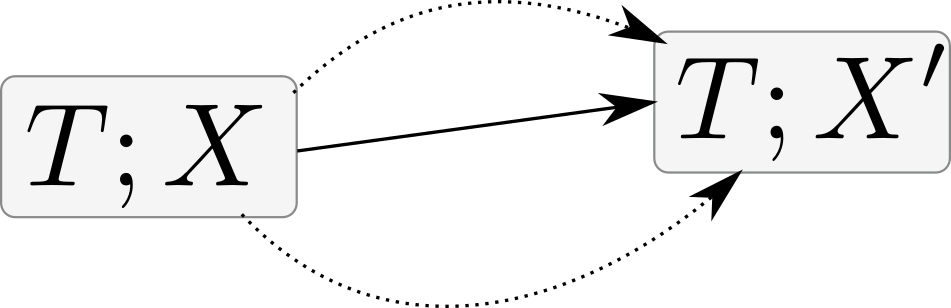このように等温環境の中で行って、その操作の「出発点（初期状態）」と「到着点（終状態）」が平衡状態になっている操作を「等温操作」と呼ぶことにする。注意すべきは、途中の状態は平衡状態でなくてもよい（平衡状態でない状態は$(T,X)$のように表せないから、途中の状態をこんなふうに記述することもできない）。
このような状態変化を
$(T;X){{\rm i}\atop\longrightarrow}(T;X')$
と書くことにする。iは等温（isothermal）の頭文字である。
だから「等温操作」という名前だが操作の途中の温度は一般に$T$ではない（どころか、温度一様ですらない）。
途中の間も平衡状態であるように「ゆ〜〜〜っくり」変化させる操作を「等温準静的操作」と呼ぶことにする。
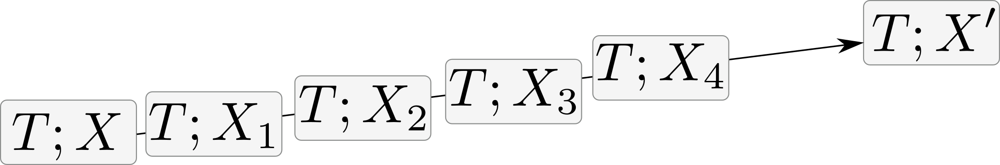この場合途中もすべて平衡状態だから、温度はちゃんと定義でき、かつ常に$T$を保つ（よって、この操作の過程はP-Vグラフに書ける！）。
このような状態変化を
$(T;X){{\rm iq}\atop\longrightarrow}(T;X')$
と書くことにする。qは準静的（quasistatic）の頭文字である。
準静的は理想的なもので実現はできないが、これを手がかりにこの後熱力学的現象を考えていくことにする。
準静的な場合の特徴は「逆が考えられる」ということである。
準静的でない場合、逆がないということを（極端な）一例で示そう。
気体をピストンに入れ、急激にピストンを引いたとする。
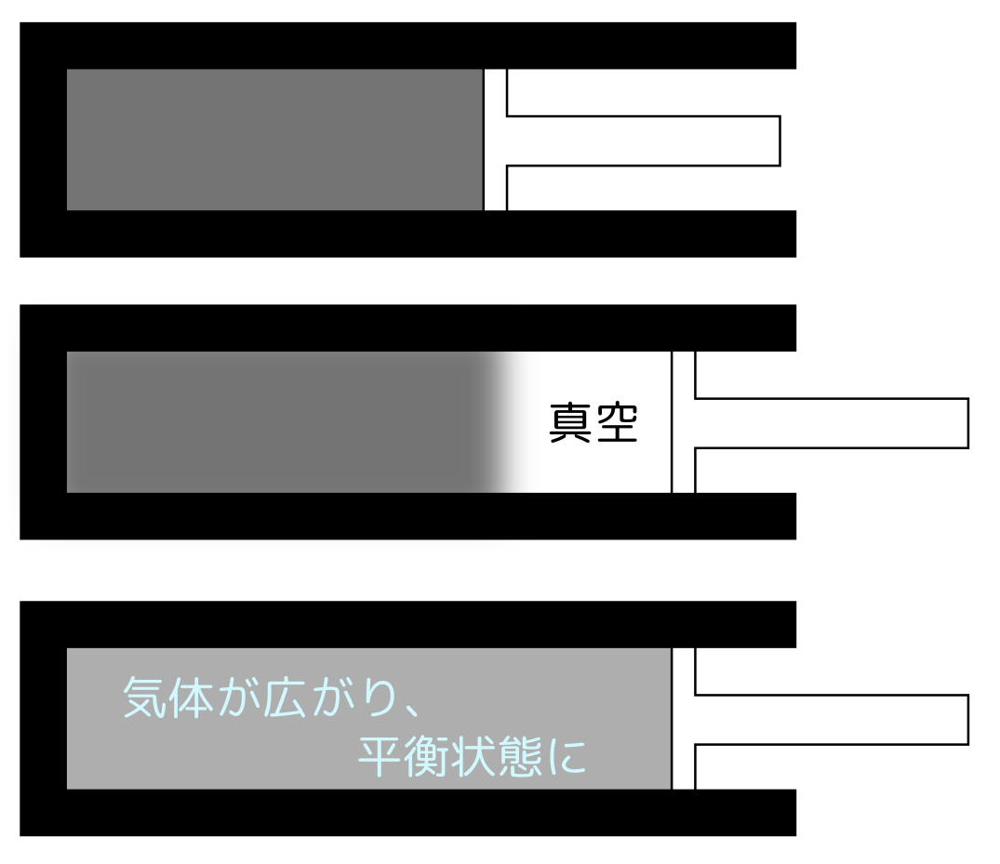
↑のような変化が起こり（引きが速いのでまず右側に真空ができ、その後気体が全体に拡がっていく）、最後には一様な平衡状態に達する。
この逆がもしあるとしたら、
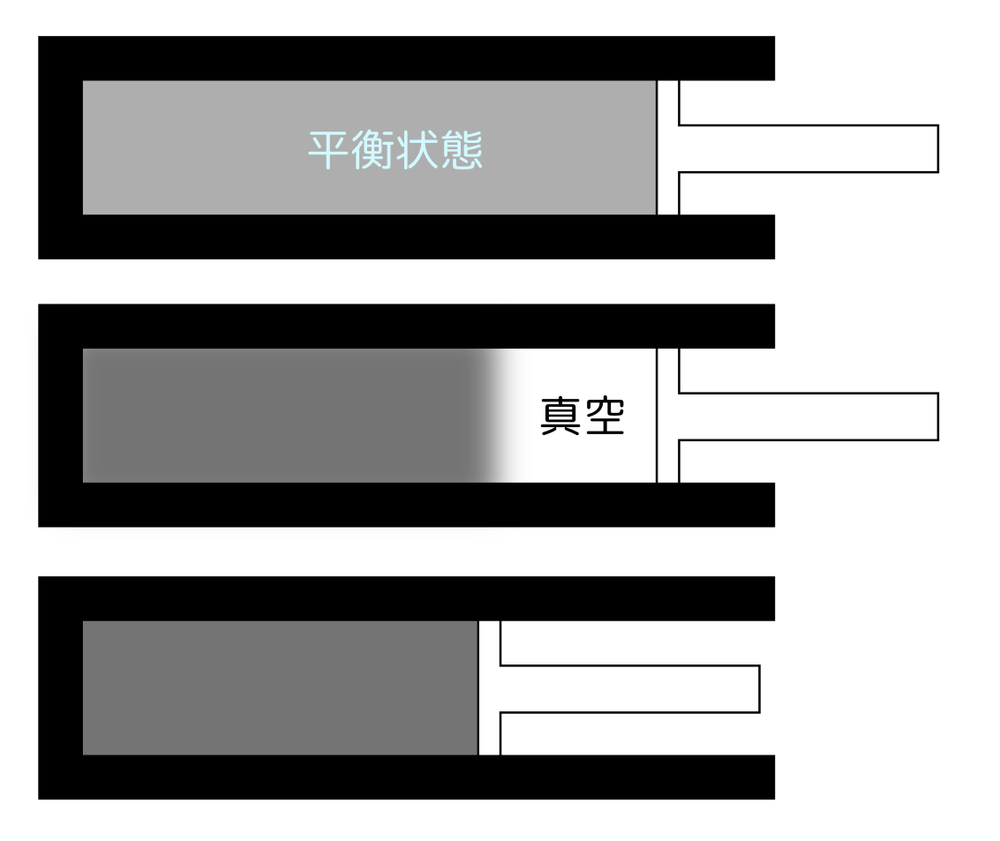
のような現象が起こることになる。つまり、平衡状態にあった気体の右側に突然真空が発生し、その後にピストンが動かされてその真空のところを埋める。
準静的操作では、常に平衡状態を保っているため、逆が可能なのである。
力学でも熱的現象が起きると逆が考えられなくなる例がある。たとえば放物運動は逆の運動も存在するが、「床に物体が落下して（ドスン、とか音がして）静止した」という現象の逆（静止した物体が周りからの音や振動のエネルギーを吸収して飛び上がる）は起きない。あるいは「摩擦熱が発生して物体が遅くなる」という現象はあるが「周りの温度が下がると物体が加速する」という現象はない。
準静的で逆操作を行ったとき、気体のする仕事は「同じ大きさで逆符号」になる（圧力の向きは変わらないが移動方向が逆になるので、圧力のする仕事が逆になるから）。
準静的でない場合、極端な場合を上の例で示したように、膨張する際は気体の出す力が準静的な場合より弱くなり、気体のする仕事は小さくなる。一方収縮する場合は逆に気体が圧縮されることでピストン付近の圧力は局所的に上がるので、力は強くなる。力が強くなるから仕事も大きくなる、と思いきや、収縮する時は運動方向が逆なので仕事は負であり、負の仕事の絶対値が増える、ということはやっぱり「仕事は小さくなる」。
すでに述べたように、準静的に動かさなかった場合「気体がついていけない」などの理由により系のする仕事は通常よりも小さくなる。そこで出発点と到着点を指定したときに、もっとも大きい仕事を「最大仕事」と定義する。最大仕事は準静的な等温操作で気体のする仕事になる。大事なことは通常の「仕事」は過程により違うが「最大仕事」は出発点と到着点だけで決まることである。よって、$W_{\rm max}(T;X_1\to X_2)$のように書く。
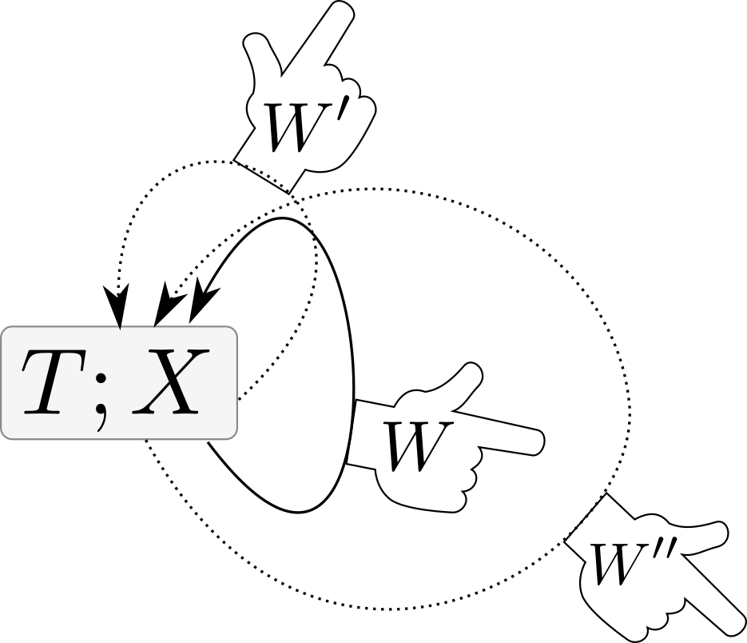
上の図のような「元に戻ってくる」状況で系のする仕事（$W,W',W''$）は0または負である、というのがKelvinの原理である。
上で例に出した気体でなく一般的にそうだ、と主張している。ただしこれは「要請」であって、（少なくとも熱力学の範囲では）何かによって証明されたりはしない。
Kelvinの原理がある為、自分の状態を変えることなく仕事を生み出す、ということは誰にも（何にも）できない（Kelvinの原理の反例は見つかってない）。これはエネルギー保存則とは別の、新しい法則である。たとえば$W_{\rm cyc}>0$な物が見つかったとしても、エネルギー保存則は満たしている。しかし、Kelvinの原理を満たしてないから存在できない。
今考えているのは等温環境の中に置かれた系なので、周囲と熱のやりとりはできる。系が仕事Wをしても、熱Qを吸収して、その吸収した熱Qを仕事にしていると考えれば、エネルギーは保存していることに注意。つまりエネルギーが保存するだけでなく、Kelvinの原理が成り立つという法則も要求しないと、この世界の記述としては不十分なのである。
地球上で、「仕事をし続ける」という現象が起きているときは、なんらかの形でKelvinの原理の前提が成り立っていない。たとえば植物は光合成をしてエネルギーを（ブドウ糖や澱粉を合成するという形で）作り出し続けている。これがなぜ許されるかというと、太陽というエネルギー源であると同時に地球（たとえば25度）よりも高温の状態（太陽の温度は6000度）があって、この温度差による熱の流れをエネルギーに変換できるからである。Kelvinの原理は等温環境の話だから、6000度の物体と25度の物体が共存しているところでは仕事をし続けることができる（その温度差が存在している限りは）。
たとえば水力発電なんてのも、太陽が水を温めて蒸発させ、雨として高いところに持ち上げてくれるからできる。
平和鳥（「水飲み鳥」という名前もあるようだし、以下の写真の商品名は「DRINKING LUCKY BIRD」）の動きを見てみよう。
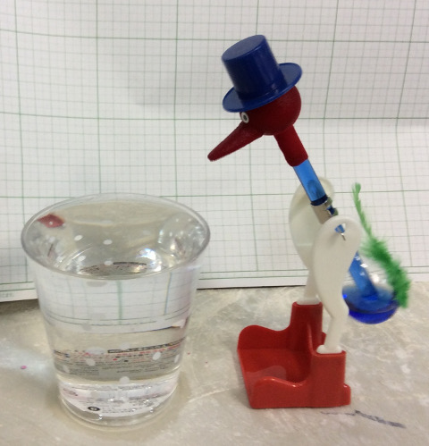
この鳥、周囲からエネルギーを取り出してサイクル運動をしているように見える。ではKelvinの原理はどうなったのか？
Kelvinの原理は
系のする仕事$W_{\rm cyc}$が0以下になる、というものであった。
この鳥のおもちゃの作動原理は、
というサイクルである。ここで大事なのは「温度が下がる」という過程が入っていること。
つまりこのおもちゃは、頭部と胴体部の温度差のおかげで動いているので、Kelvinの原理の「等温環境で」という部分に当てはまっていない。よってこのおもちゃが動き続けても、Kelvinの原理には反しない。
ここで教訓として覚えておいて欲しいのは、正の仕事ができるかどうかにとって大事なのは「温度差があること」だということ。熱機関というと（ガソリンを燃やすなどで）高温部分を作って動くものを思い浮かべてしまいがちだが、このおもちゃの場合は水の蒸発で低温を作ることで動く。
「熱機関は温度差が大事」ということはこの後でもまた出てくる。